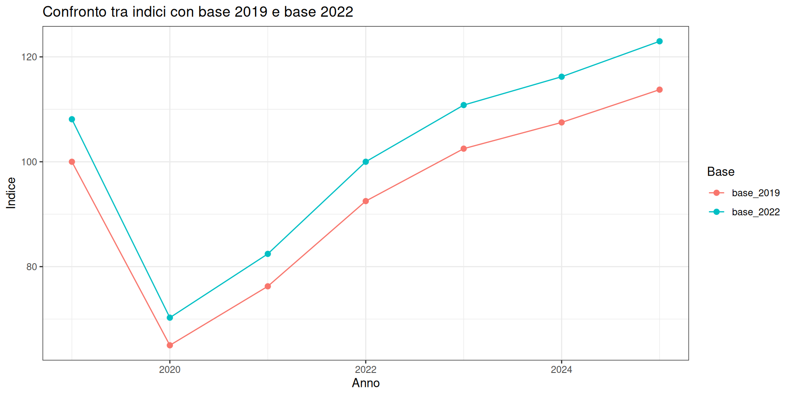

Dire “il costo di un paniere è pari a 108” non significa nulla! Di cosa stiamo parlando: 108 euro, 108 punti, 108 mele o il 108% di un valore? Un numero indice acquista significato soltanto quando conosciamo la grandezza misurata, il periodo di riferimento e il modo in cui sono state combinate le sue componenti.
Abbiamo visto che gli indici temporali sono in grado di trasformare l’evoluzione di una o più grandezze e di rapportare i valori iniziali in una scala relativa. Si fa uso di queste tecniche per seguire prezzi, produzione, salari, commercio, mercati finanziari, servizi pubblici e, generalmente, ogni qual volta vogliamo effettuare un confronto tra due gruppi di dati differenti (es. unità di misura, posizione geografica) che hanno delle affinità (es. stesso fenomeno). Gli indici sono quindi strumenti di sintesi e comparazione e consentono di rispondere a domande come:
di quanto sono aumentati i prezzi rispetto all’anno base?
la produzione ha recuperato il livello precedente a una crisi?
come si confrontano serie espresse in unità o ordini di grandezza differenti?
quanto della crescita della spesa dipende dai prezzi e quanto dalle quantità?
Il vantaggio della scala relativa è la comparabilità. Ottenere una serie di valori comparabili ha però un costo: passare ad una scala di valori relativa fa perdere l’aspetto legato all’unità di misura originaria e fornisce dei vaori che dipendono dalle scelte di base e dal paniere utilizzato. Per interpretarlo occorre quindi conoscere come è stato costruito.
6.1 Prima degli indici: scegliere il denominatore
Molti indicatori economici e sociali sono il risultato di rapporti statistici. In forma generale mettono una quantità \(A\) al numeratore e una quantità \(B\) al denominatore:
\[R=\frac{A}{B}.\]
Il simbolo \(R\) indica il rapporto. Il significato del rapporto dipende principalmente dal legame che intercorre tra \(A\) e \(B\), ovvero dalle caratteristiche degli indici che stiamo confrontando tra loro. Un indicatore ha l’obiettivo di misurare un fenomeno e di rispondere a una domanda. In questo caso, stiamo costruendo degli indici “nuovi” effettuando delle trasformazioni di altri indici che abbiamo a disposizione. Questo tipo di operazione comporta che, se cambiamo il “meccanismo matematico” (il rapporto) o gli elementi in gioco (il denominatore), ne consegue che cambiamo anche la domanda di ricerca a cui tale indicatore risponde.
Si possono costruire dei rapporti confrontando due serie di dati distinte per A e B, oppure confrontando due grandezze della stessa serie. Nel primo caso, il rapporto può essere interpretato come una misura di coesistenza (quante unità di A esistono per ogni unità di B?) mentre nel secondo caso il rapporto può essere interpretato come una misura di derivazione (quanto vale A rispetto a B?). Di seguito è riportato uno schema che sintetizza alcuni esempi di rapporti statistici comunemente utilizzati.
Tipo di rapporto
Domanda
Esempio e interpretazione
Composizione
Quale parte del totale?
120 studenti pendolari su 300 studenti: \(120/300=40\%\) del totale.
Coesistenza
Come si confrontano due parti?
120 pendolari e 150 residenti: \(120/150=0{,}8\), cioè 80 pendolari ogni 100 residenti.
Densità o intensità
Quanto fenomeno per unità di esposizione?
20.000 abitanti su 50 km²: 400 abitanti per km².
Derivazione
Quanto vale un fenomeno rispetto a un altro logicamente collegato?
50 disoccupati su 1.000 persone nelle forze di lavoro: tasso di disoccupazione del 5%.
Durata media
Quanto tempo per episodio o unità?
1.200 giornate di degenza per 300 ricoveri: 4 giorni per ricovero.
Incremento
Quanto è cambiato rispetto al valore iniziale?
Da 100 a 110: \((110-100)/100=10\%\).
Generalmente, quando si costruisce un rapporto di composizione, si fa in modo che esso abbia valori tra 0 e 1: 0 significa che la parte è assente, 1 significa che la parte coincide con il totale. In altri casi, i limiti del rapposto possono cambiare, ad esempio un rapporto di coesistenza o di densità ossono superare il valore 1. Alcuni rapporti sono numeri puri (es. la quota) mentre altri generano un’unità composita, come gli abitanti per \(km^2\) o euro per residente. Non sempre le quantità composite hanno un’interpretazione immediata.
Si noti però che non si tratta di una regola matematica: non necessariamente tutti i rapporti forniscono dei valori limitati. Il significato del rapporto dipende dalla domanda, dal contesto e dalle scelte del ricercatore. Un rapporto può essere espresso in percentuale, in unità per mille o in unità per anno, ma non cambia la sua interpretazione.
AvvisoUn rapporto non dimostra una causa
La denominazione tradizionale “rapporto di derivazione” indica solo un legame logico tra numeratore e denominatore e on preclude nessun discorso legato alla “causalità” , ovvero non implica che il numeratore sia la causa del denominatore (o viceversa). Ad esempio, il rapporto spesa pubblica/PIL descrive una relazione di scala e non spiage l’effetto causale della spesa sul PIL.
I rapporti di incremento e le variazioni percentuali sono approfonditi nel capitolo sulle trasformazioni di serie storiche. Qui li colleghiamo alla costruzione dei numeri indice.
6.2 Numeri indice semplici
Un numero indice semplice confronta nel tempo una sola grandezza. Indichiamo con \(y_t\) il valore osservato al tempo \(t\) e con \(y_b\) il valore nel periodo scelto come base \(b\). L’indice a base fissa 100 è
\[I_{b,t} = \frac{y_t}{y_b} \cdot 100,\]
dove \(I_{b,t}\) è il valore dell’indice al tempo \(t\) con base \(b\). Nel periodo base \(I_{b,b}=100\).
L’interpretazione è immediata:
\(I_{b,t}=100\): il livello è uguale a quello della base;
\(I_{b,t}>100\): il livello è maggiore di quello della base;
\(I_{b,t}<100\): il livello è minore di quello della base.
La variazione percentuale tra la base e il periodo \(t\) può essere calcolata come
Supponiamo che \(I_{b,t} = 113,5\), esso segnale un livello superiore del 13,5% rispetto alla base, ma attenzione perchè non va interpretato come una crescita del 113,5%.
6.3 Base mobile
L’indice a base fissa confronta tutti i periodi con lo stesso riferimento \(b\) ed è utile per valutare il cambiamento cumulato e verificare se una serie abbia superato un livello storico di riferimento (es. superamento della soglia di inquinamento del 2020, recupero della capacità di spesa rispetto al periodo pre-crisi, etc.).
Però a volte risulta utile poter fare anche dei confronti rispetto al periodi contigui, come ad esempio rapportare il preiodo attuale con quello precedente, per valutare la crescita congiunturale di un fenomeno. Per fare questo si ricorre ad un altro indice, denominato a base mobile. Questo indice confronta appunto ciascun valore temporale con quello immediatamente precedente.
\[M_t=\frac{y_t}{y_{t-1}}\cdot 100,\]
dove \(M_t\) è l’indice mobile tra \(t-1\) e \(t\). La corrispondente variazione percentuale è \(M_t-100\). Rispetto all’indice precedente, questo “perde” il pedice \(b\) in quanto non esiste più un periodo di riferimento fisso.
Esempio 6.1: Un esempio a base fissa
Consideriamo una serie fittizia costruita di viaggi annuali sul trasporto pubblico, espressi in milioni.
Nel 2020 l’indice a base 2019 è 65: i viaggi sono inferiori del 35% rispetto al 2019. Nel 2023 l’indice raggiunge 102,5, quindi il livello supera del 2,5% quello della base. Nel 2025 arriva a 113,75: 91 milioni di viaggi sono il 13,75% in più degli 80 milioni del 2019.
La scala indice facilita il confronto relativo, ma non sostituisce il livello. Sapere che una serie vale 113,75 non rivela se si tratti di 91 milioni di viaggi o di 910 mila. Quando la dimensione assoluta è rilevante, livelli e indici devono essere presentati insieme.
Osserviamo adesso l’indice a base mobile. Nel 2020 il numero di viaggi passa da 52 a 61 milioni: la variazione percentuale è pari a 117,31. Questo risultato sigifica che i viaggi aumentano quindi del 17,31% rispetto al 2020. Ciò non significa però che si sia recuperato il livello del 2019: l’indice a base fissa è ancora 76,25 ed è maggiore di 61. Infatti, può succedere che si verifichi una forte crescita (indice con base mobile alto) dopo una caduta (indice a base fissa basso), un esempio comune di tali fenomeni è dato dai titoli azionari.
Si noti che, essendo taliindici il risultato di rapporti tra due valori, essi ne ereditano i pregi e difetti. Ad esempio, può accadere che si verifichi un tasso particolarmente elevato perchè abbiamo un denominatore eccezionalmente basso. Passare da 52 a 61 milioni produce una crescita del 17,31%, ma lascia la serie sotto il livello pre-crisi. Per leggere correttamente se c’è una ripresa occorre affiancare alla valutazione degli indici anche un confronto tra i valori originali.
6.4 Scegliere e cambiare la base
Il periodo base \(b\) non è scelto a caso, spesso segue delle regole e si ancora a dei riferimenti storico/politici, per ottenere una misurazione chiara e rappresentativa di un fenomeno. Il periodo base agisce come punto di riferimento, dal quale diramiamo tutti i confronti, quindi la potenziale presenza di eventi nuovi o non documentati che alterano le serie (es. break o temporary changes) possono rendere la base poco informativa. La scelta della base non altera i dati originari, ma cambia il focus dal quale vengono letti i confronti, per tale motivo si può pensare di effettuare un cambio del periodo di riferimento in base a nuove esigenze per rendere i confronti più chiari ed informativi. Ad esempio, se una serie è già espressa con base \(b=100\) e vogliamo porre uguale a 100 un nuovo periodo \(c\), il cambio di base è effettuato come
\[I_{c,t}=\frac{I_{b,t}}{I_{b,c}}\cdot 100,\]
dove \(I_{b,c}\) è il vecchio indice osservato nel nuovo periodo base. Il rapporto elimina la vecchia base e confronta ogni periodo direttamente con \(c\).
Supponiamo di voler cambiare la base fissa nei dati dell’esempio Esempio 6.1, dal 2019 a 2022, si ottiene
Con base 2022, il valore del 2025 è 122,97: i viaggi sono superiori del 22,97% rispetto al 2022. Con base 2019 lo stesso anno vale 113,75 (13,75%). Non c’è contraddizione, in quanto abbiamo cambiato il confronto utilizzando un nuovo denominatore e, di conseguenza, stiamo rispondendo ad una domanda di ricerca totalmente diversa.

Dato che il ribassamento moltiplica tutti gli indici per la stessa costante, di conseguenza non cambia i rapporti tra due periodi. Come ci aspettavamo otteniamo quindi gli stessi lavori, inclusi altri indici derivati come i tassi di variazione, i punti di massimo e minimo o la forma del grafico.
6.5 Concatenare gli indici
Quando pesi, panieri o classificazioni vengono aggiornati periodicamente, può essere necessario collegare segmenti costruiti con basi diverse. L’operazione è detta concatenamento.
Definiamo il coefficiente di collegamento tra due periodi consecutivi come
\[L_t=\frac{y_t}{y_{t-1}}=\frac{M_t}{100}.\]
Partendo da \(I_{0,0}=100\), un indice concatenato si ottiene moltiplicando progressivamente i coefficienti:
Il concatenamento viene utilizzato principalmente quando non si hanno a disposizione i dati grezzi \(y_t\), ma solo i risultati del calcolo degli indici base mobile.
Si può notare che le due colonne coincidono. Nei dati ufficiali complessi, tuttavia, concatenare consente di aggiornare i pesi e il paniere. Una serie concatenata non equivale necessariamente a un indice diretto calcolato sull’intero intervallo con un unico paniere. Anche gli arrotondamenti dei collegamenti possono produrre piccole discrepanze.
6.6 Caso reale: indici sintetici di prezzi, quantità e valori
Un indice viene detto semplice quando esso riguarda il confronto di una sola grandezza. L’inflazione o il volume della produzione richiedono invece di sintetizzare molti beni e servizi. Non possiamo effettuare la media dei prezzi in euro, euro per chilogrammo ed euro per chilowattora come se fossero tutte misure omogenee. Occorre trovare una soluzione di “compromesso”, ovvero ponderare ogni variazione in base alla sua “importanza” economica.
Supponiamo che il paniere contenga \(n\) beni. Per il bene \(i\) indichiamo con:
\(p_{ib}\) il prezzo nel periodo base \(b\);
\(p_{it}\) il prezzo nel periodo corrente \(t\);
\(q_{ib}\) la quantità nel periodo base;
\(q_{it}\) la quantità nel periodo corrente.
L’indice dei prezzi di Laspeyres valuta il paniere della base ai prezzi correnti e lo confronta con il suo costo nella base:
Le quantità \(q_{ib}\) restano fisse e funzionano da pesi. L’indice risponde alla domanda “quanto costerebbe oggi il paniere acquistato nel periodo base?”.
L’indice dei prezzi di Paasche usa invece le quantità correnti:
Risponde alla domanda “quanto costa oggi il paniere corrente rispetto a quanto sarebbe costato ai prezzi della base?”. Laspeyres è più semplice da aggiornare perché non richiede continuamente nuove quantità, mentre Paasche incorpora più rapidamente i cambiamenti nei comportamenti di acquisto, ma richiede informazioni correnti.
Esempio 6.2: Un paniere didattico
Consideriamo un paniere di esempio costruito con dati fittizi relativi a pane (Euro al chilo), biglietti del trasporto pubblico (costo unitario) ed energia elettrica (euro per kilowatt-ora).
indice valore
1 Prezzi di Laspeyres 115.94
2 Prezzi di Paasche 115.67
3 Quantità di Laspeyres 97.83
4 Valore 113.16
L’indice di Laspeyres è 115,94: acquistare ai prezzi correnti le quantità costa il 15,94% in più rispetto al prezzo base. L’indice di Paasche è 115,67: il paniere corrente costa il 15,67% in più rispetto a quanto sarebbe costato ai prezzi della base. La differenza è piccola in questo esempio, ma mostra che la misura della variazione dei prezzi dipende dalle quantità usate come pesi.
Il fatto che Laspeyres sia qui più alto di Paasche non è una legge matematica. Può accadere quando le quantità si spostano verso beni diventati relativamente meno costosi, ma la relazione dipende dai dati. Per ottenere un’informazione che sia da “compromesso” rispetto a quelle elencate si usano altri indici in alcuni contesti, come l’indice di Fisher che è pari alla media geometrica dei due indici, ma non elimina però la necessità di conoscere le informazioni inerenti a dati, pesi e definizioni.
6.6.1 Indici delle quantità e dei valori
Per misurare la variazione delle quantità possiamo mantenere fissi i prezzi della base. L’indice delle quantità di Laspeyres è
Riprendendo i dati dell’esempio Esempio 6.2 si ottiene che nel panierel’indice delle quantità è pari a 97,83. Questo risultato significa che le quantità correnti, valutate ai prezzi della base, sono inferiori del 2,17% rispetto alla base.
L’indice del valore confronta invece la spesa complessiva corrente con quella della base:
Facendo sempre riferimento all’esempio Esempio 6.2, la spesa passa da 345 a 390,4 Euro e l’indice del valore è 113,16. La spesa aumenta quindi del 13,16%, pur in presenza di prezzi più alti e quantità aggregate leggermente più basse. Un indice di valore non separa i due effetti, questo risultato evidenzia il motivo per il quale fatturato e spesa nominale non devono essere interpretati automaticamente come misure di volume.
Esempio 6.3: Dall’indice dei prezzi all’inflazione
Proviamo ad applicare la teoria degli indici appena introdotta in una comune applicazione in campo reale. Un indice dei prezzi misura un livello relativo, in tal senso l’inflazione misura la sua variazione nel tempo. Se \(P_t\) e \(P_{t-1}\) sono i valori dello stesso indice nei due periodi, il tasso di inflazione è
dove \(\pi_t\) indica la variazione percentuale dei prezzi tra \(t-1\) e \(t\). Un indice pari a 108 con base 100 indica prezzi superiori dell’8% rispetto alla base, non necessariamente un’inflazione dell’8% nell’ultimo anno.
Se l’indice passa da 108 a 111, l’inflazione diventa
Una diminuzione dell’inflazione non implica una diminuzione dei prezzi. Se l’inflazione passa dal 6% al 2%, i prezzi continuano ad aumentare, ma più lentamente. Una riduzione del livello generale dei prezzi è detta deflazione.
Si noti che le variazioni annuali vanno confrontate facendo molta attenzione! La variazione rispetto al mese precedente e quella rispetto allo stesso mese dell’anno precedente usano denominatori diversi e quindi è scorretto confrontarle senza specificare l’orizzonte.
6.7 Pesi, panieri e rappresentatività
Un indice sintetico non è una fotografia neutrale del fenomeno, in quanto dipende da una serie di decisioni metodologiche fatte dal ricercatore in base alle sue conoscenze personali, alla letteratura di riferimento e al contesto. Alcuni aspetti da tenere in considerazione che influiscono profondamente sui risultati finali sono ad esempio:
quali beni, territori o gruppi includere
quali prezzi o quantità osservare
quali pesi assegnare alle componenti
con quale frequenza aggiornare paniere e pesi
come trattare nuovi prodotti, cambiamenti di qualità e dati mancanti
come collegare le serie prima e dopo un aggiornamento
Un indice medio dei prezzi non coincide con la percezione del costo della vita di ogni famiglia, ma in qualche modo ne coglie alcuni aspetti essenziali (come ad esemio il costo dell’energia o degli alimenti). Due nuclei con quote di spesa diverse per affitto, energia, alimentari e trasporti possono subire variazioni differenti. Analogamente, un indice territoriale può nascondere forti eterogeneità tra aree.
Nonostante questo ultimo effetto possa essere voluto, in quanto l’obiettivo di ricerca ad esempio può richiedere proprio il confronto tra aree, occorre sempre ricordare che un indice sintetico deve essere il più possibile “epurato” da ogni effetto secondario che possa in qualche modo fuorviare la stima finale dal misurare l’effetto desiderato. La stessa cautela vale per gli indicatori sociali compositi. Ad esempio, combinare istruzione, salute, reddito e partecipazione politica richiede normalizzazione e pesi. Queste scelte incorporano una concezione di ciò che conta e devono essere rese trasparenti. Un indice sintetico facilita la comunicazione, ma non sostituisce l’esame delle singole componenti.
Esempio 6.4: Ranking della qualità della vita nelle città
Quante volte leggiamo che una città è al primo posto in un ranking di qualità della vita? E come mai, al variare del tipo di ricerca, si ottengono spesso dei ranking totalmente diversi tra loro? Ci aspettiamo che, se stiamo in qualche modo misurando la qualità della vita, le città che si posizionano in alto in una classifica dovrebbero essere le stesse che si posizionano in alto in un’altra classifica.
In realtà, non è così. Un indice sintetico (composito, in questo caso) può essere costruito combinando variabili come reddito, occupazione, istruzione, salute, sicurezza, ambiente e servizi. La scelta delle variabili e dei pesi determina il risultato finale. Due classifiche diverse possono dare risultati opposti se cambiano le componenti in gioco o i pesi. Due esempi pratici: - escludere degli aspetti legati alla salute può far salire una città in classifica, mentre includerli può farla scendere; - dare più peso alla sicurezza può far salire una città con bassi tassi di criminalità, mentre dare più peso all’istruzione può farla scendere se i livelli di istruzione sono bassi; - lavorare in modo congiunto sui pesi di due variabili può far salire una città in classifica. Ad esempio se aumento il peso della componente sicurezza e diminuisco quello sull’istruzione, sto dicendo che l’istruzione darà un contributo inferiore nella scelta della posizione in classifica mentre la sicurezza rivestirà un ruolo maggiore
Per questo motivo un aspetto fondamentale della lettura di un qualsiasi indice è dato dalla capacità di saper leggere ed interpretare la documentazione metodologica e non limitarsi al solo posizionamento nella classifica.
6.8 Errori frequenti nella lettura degli indici
Confondere indice e percentuale di crescita. Un indice 125 significa +25% rispetto alla base, non +125%.
Dimenticare la base. Lo stesso valore numerico può avere significati diversi con basi diverse.
Confrontare serie con basi diverse. Per effettuare confronti, occorre prima portare le serie alla stessa base comune, verificando che definizioni e copertura siano compatibili.
Sommare tassi successivi. Le variazioni si concatenano moltiplicando i coefficienti, non sommando le percentuali.
Interpretare un indice dei prezzi come costo universale. Il risultato dipende dal paniere e dai pesi medi.
Scambiare valore nominale e volume. Un aumento della spesa o del fatturato può dipendere dai prezzi, dalle quantità o da entrambi.
Ignorare rotture metodologiche. Un cambio di classificazione, fonte o copertura non viene risolto con un semplice cambio di base.
Attribuire causalità a un indicatore. Un indice descrive un aspetto legato ad una dinamica più complessa, da solo non identifica le cause del cambiamento.
6.9 Attualizzare valori monetari rispetto all’inflazione
Un importo espresso in euro non ha lo stesso potere d’acquisto in anni diversi. Se i prezzi aumentano, 1.000 euro del 2020 permettono di acquistare più beni e servizi di 1.000 euro del 2025. Confrontare direttamente importi nominali può quindi attribuire a una crescita reale ciò che dipende soltanto dall’inflazione.
Per rendere confrontabili gli importi si sceglie un anno di riferimento e si usa un indice dei prezzi coerente con la grandezza analizzata. Indichiamo con:
\(y_t^{N}\) il valore nominale osservato nell’anno \(t\);
\(P_t\) il valore dell’indice dei prezzi nell’anno \(t\);
\(P_r\) il valore dello stesso indice nell’anno di riferimento \(r\);
\(y_t^{(r)}\) il valore dell’anno \(t\) espresso ai prezzi dell’anno \(r\).
La conversione è
\[
y_t^{(r)}=y_t^{N}\frac{P_r}{P_t}.
\]
Il rapporto \(P_r/P_t\) è il coefficiente di rivalutazione. Se l’anno di riferimento è successivo a \(t\) e nel frattempo i prezzi sono aumentati, il coefficiente è maggiore di uno: l’importo passato viene tradotto negli euro, meno potenti, dell’anno più recente. Se invece scegliamo come riferimento un anno precedente, il coefficiente è normalmente minore di uno e otteniamo una serie a prezzi costanti di quell’anno.
Riprendiamo i dati simulati sulla spesa sociale introdotti all’inizio del capitolo. L’indice dei prezzi vale 100 nel 2019 e 126,5 nel 2025. Vogliamo esprimere tutti gli importi in milioni di euro attualizzati al 2025.
Per il 2019 il coefficiente è \(126{,}5/100=1{,}265\). I 420 milioni di euro spesi nel 2019 equivalgono quindi a \(420\times1{,}265=531{,}3\) milioni di euro del 2025. Nel 2025 il coefficiente è uno, perché l’importo è già espresso nei prezzi dell’anno scelto come riferimento.
Il confronto cambia sensibilmente dopo la trasformazione. La spesa nominale cresce da 420 a 585 milioni, pari al 39,3%. A prezzi del 2025 cresce invece da 531,3 a 585 milioni, cioè di circa il 10,1%. Nel nostro esempio costruito, gran parte dell’aumento nominale riflette dunque la crescita dei prezzi, non un aumento equivalente delle risorse reali.
Lo stesso calcolo permette di tradurre un singolo importo. Con gli indici dell’esempio, 1.000 euro del 2020 corrispondono a
\[
1.000\times\frac{126{,}5}{101{,}2}=1.250
\]
euro del 2025. I due importi hanno lo stesso potere d’acquisto rispetto al paniere rappresentato dall’indice, non lo stesso valore nominale.
AvvisoScegliere il deflatore appropriato
Il risultato dipende dall’indice utilizzato. Un indice dei prezzi al consumo può essere adatto per studiare il potere d’acquisto delle famiglie, ma non necessariamente per una spesa sanitaria, un investimento pubblico o il PIL. L’indice deve riferirsi a un paniere e a un ambito coerenti con la variabile monetaria. La costruzione, il ribasamento e l’interpretazione degli indici sono approfonditi nel capitolo sugli indici temporali.
Questa operazione è spesso chiamata deflazione di una serie monetaria, anche quando l’anno di riferimento è successivo. Non va confusa con la deflazione intesa come diminuzione generale dei prezzi. Inoltre, non coincide con l’attualizzazione finanziaria, che converte un valore futuro nel suo valore presente mediante un tasso di interesse o di sconto. Qui stiamo correggendo esclusivamente per la variazione del livello dei prezzi.
La trasformazione non misura la qualità, l’efficienza o l’effetto causale della spesa. Stabilisce soltanto quanti euro dell’anno di riferimento hanno un potere d’acquisto comparabile a ciascun importo osservato.
6.10 Una procedura per lavorare con gli indici
Prima di calcolare o commentare un indice è utile seguire una sequenza essenziale:
definire il fenomeno e la domanda di confronto;
identificare numeratore, denominatore, unità di analisi e periodo;
scegliere una base documentata e sostantivamente interpretabile;
distinguere indice semplice, indice sintetico, valore, prezzo e quantità;
controllare paniere, pesi, copertura e aggiornamenti metodologici;
calcolare il confronto evitando arrotondamenti intermedi;
tradurre il risultato in una frase con base e orizzonte espliciti;
affiancare, quando utile, livelli originari, componenti e metadati.
Un buon commento non si limita a dire “l’indice è salito”, bisogna specificare rispetto a quando, di quanto, per quale popolazione o paniere e quali aspetti del fenomeno rimangono fuori dalla misura.